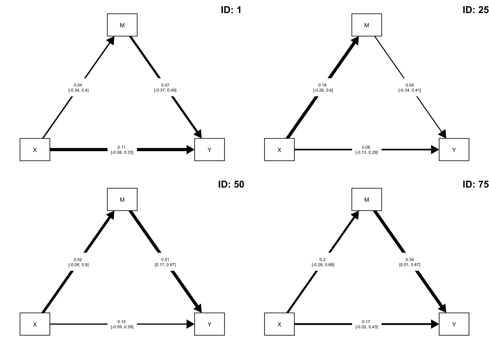
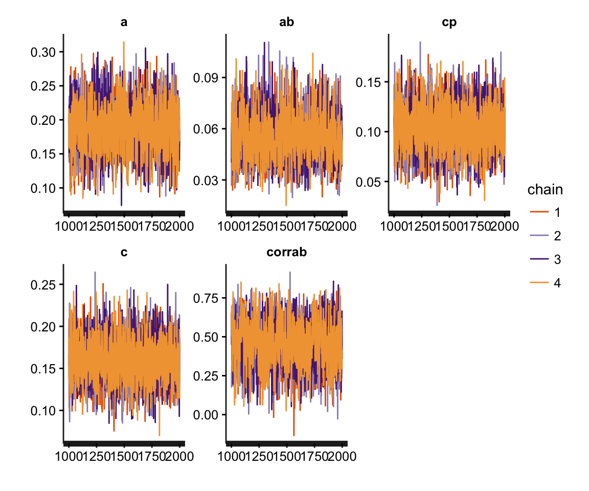

bmlm: Multilevel Mediation Modeling with Stan
Matti Vuorre
2016-07-27
Introduction
bmlm is an R package that allows easy estimation of multilevel mediation models. bmlm uses the RStan interface to the powerful Stan Bayesian inference engine. Users can estimate, summarize and plot a multilevel mediation model easily with the convenient functions provided with bmlm. This document explains how to install bmlm and its required components, and then walks through an example of how to use it in practice.
Installing bmlm
Please ensure you have the latest version of R installed.
The latest version of bmlm is available on GitHub. To install R packages from GitHub, please install the devtools package first, as shown by the first line below. Then install bmlm using devtools:
install.packages("devtools")
# Install from GitHub using the devtools package
devtools::install_github("mvuorre/bmlm", args = "--preclean")If something goes wrong during the installation process, you will receive a notice usually asking you to install additional packages. If you are unable to resolve the problems, please contact me or open an issue on GitHub.
Example
After installing the required software, load the bmlm package to your current R workspace:
library(bmlm)bmlm contains an example data set from Intensive Longitudinal Methods: An Introduction to Diary and Experience Sampling Research (Bolger & Laurenceau, 2013). We’ll use this data set in the example, and first load it into the workspace from the package, and display what the data looks like:
data(BLch9)
head(BLch9)| id | time | fwkstrs | fwkdis | freldis | x | m | y |
|---|---|---|---|---|---|---|---|
| 101 | 1 | 3 | 5.59 | 3.03 | 0.33 | 0.98 | -1.44 |
| 101 | 2 | 3 | 5.54 | 4.62 | 0.33 | 0.93 | 0.14 |
| 101 | 3 | 3 | 3.89 | 2.85 | 0.33 | -0.72 | -1.63 |
| 101 | 4 | 4 | 5.35 | 6.40 | 1.33 | 0.75 | 1.92 |
| 101 | 5 | 1 | 4.48 | 2.54 | -1.67 | -0.12 | -1.93 |
| 101 | 6 | 2 | 3.34 | 5.16 | -0.67 | -1.27 | 0.69 |
Data preprocessing
The goal of multilevel mediation modeling, in this case, is to assess the within-person relationships between X, M and Y. To this end, it is important to isolate the within- and between-person components of X, M, and Y. The isolate() function in bmlm allows the user to create within- and between-person centered values of variables, and additionally to standardize them. The example dataset BLch9 already contains subject-mean deviated components, but here we illustrate how to obtain these using the isolate() function. The key inputs to this function are d, a data frame; by a column of values that identifies individuals; and value, which variable(s) should be transformed.
BLch9 <- isolate(BLch9,
by = "id",
value = c("fwkstrs", "fwkdis", "freldis"))| id | time | fwkstrs | fwkdis | freldis | x | m | y | fwkstrs_cw | fwkdis_cw | freldis_cw |
|---|---|---|---|---|---|---|---|---|---|---|
| 101 | 1 | 3 | 5.59 | 3.03 | 0.33 | 0.98 | -1.44 | 0.33 | 0.98 | -1.44 |
| 101 | 2 | 3 | 5.54 | 4.62 | 0.33 | 0.93 | 0.14 | 0.33 | 0.93 | 0.14 |
| 101 | 3 | 3 | 3.89 | 2.85 | 0.33 | -0.72 | -1.63 | 0.33 | -0.72 | -1.63 |
| 101 | 4 | 4 | 5.35 | 6.40 | 1.33 | 0.75 | 1.92 | 1.33 | 0.75 | 1.92 |
| 101 | 5 | 1 | 4.48 | 2.54 | -1.67 | -0.12 | -1.93 | -1.67 | -0.12 | -1.93 |
| 101 | 6 | 2 | 3.34 | 5.16 | -0.67 | -1.27 | 0.69 | -0.67 | -1.27 | 0.69 |
The ..._cw variables now contain isolated within-person (“subject-mean deviated”) pieces of each variable. We’ll use these for the mediation analysis.
Fit model
To estimate the multilevel mediation model, run mlm() and save its output to an object. Here we’ll call it fit. You can also ask Stan to run multiple MCMC chains in parallel (if supported by your computer), as shown by the first line below.
options(mc.cores = parallel::detectCores())
fit <- mlm(d = BLch9,
id = "id",
x = "fwkstrs_cw",
m = "fwkdis_cw",
y = "freldis_cw",
iter = 2000)The main arguments to mlm() are d (a data.frame), which here was set to BLch9. The user also needs to specify which columns contain the variables needed for the mediation model, unless they are already named id, x, m, and y:
idis a column of participant IDs in the provideddata.frame.xis the manipulated variable.mis the mediator variable.yis the outcome variable.
There are various additional arguments to the above command. Most notably, the iter = 2000 specified the number of samples to draw from the posterior distribution, for each MCMC chain. The default is to use 4 chains. Further, Stan’s MCMC algorithms use a portion of the samples as warmup to adjust various underlying parameters. The default of one half was used for this example.
Stan’s MCMC procedures are very efficient, but estimating the model with large datasets will take a while. This example takes about 25 seconds on a desktop Mac (8GB RAM, 4ghz Intel i7).
Summarize fitted model
After the samples have been obtained, bmlm’s helper functions can be used to obtain summaries of the results. For more options, all rstan methods are also available.
Numerical summary
A numerical summary can be obtained by mlm_summary(fit):
mlm_summary(fit)| Parameter | Mean | SD | Median | ci_lwr | ci_upr | pprob | n_eff | Rhat |
|---|---|---|---|---|---|---|---|---|
| a | 0.19 | 0.04 | 0.19 | 0.12 | 0.26 | 1.00000 | 2202 | 1 |
| b | 0.15 | 0.03 | 0.15 | 0.09 | 0.21 | 1.00000 | 2059 | 1 |
| cp | 0.10 | 0.02 | 0.10 | 0.06 | 0.15 | 1.00000 | 4000 | 1 |
| ab | 0.05 | 0.01 | 0.05 | 0.03 | 0.08 | 1.00000 | 1343 | 1 |
| c | 0.16 | 0.03 | 0.16 | 0.11 | 0.21 | 1.00000 | 2787 | 1 |
| pme | 0.35 | 0.08 | 0.34 | 0.20 | 0.53 | 1.00000 | 1259 | 1 |
| covab | 0.03 | 0.01 | 0.03 | 0.01 | 0.05 | 0.99675 | 1172 | 1 |
| corrab | 0.45 | 0.15 | 0.45 | 0.13 | 0.72 | 0.99675 | 942 | 1 |
mlm_summary() returns, for each parameter, the following information:
- Posterior Mean: This can be used as a point estimate of parameter
- Posterior SD: The standard deviation of the marginal posterior distribution of plausible parameter values.
- Posterior Median: If the posterior distribution is skewed, the median might be used as a more accurate point estimate.
- Lower and upper limits to Credible Intervals. The CIs summarize the central X% mass of the marginal posterior distribution, where X% is defined by a
levelargument tomlm_summary(). The default “confidence level” is 0.91, but users may supply any value they desire. - Posterior probability (pprob), which summarizes the probability density at the observed side of 0. For example, if the estimate (Mean) is -0.55, the posterior probability is defined as the proportion of probability density below zero.
- n_eff and Rhat are diagnostic values used to diagnose the performance of the underlying Stan MCMC procedures. see
?mlmor?stanfor details.
Graphical summaries
Currently, bmlm provides two graphical summaries of the estimated model. The first draws a path diagram of the mediation model, with point estimates of the relevant average-level parameters, and their associated credible intervals (as defined by level):
mlm_path_plot(fit, level = .89,
xlab = "Work\nstressors",
mlab = "Work\ndissatisfaction",
ylab = "Relationship\ndissatisfaction",
edge.color = NULL) # Colors edgesPath diagram of the average level mediation model, with numerical summaries of the relevant parameters.
This figure offers a quick view of the estimated model: All paths (a, b, c') are positive with fairly narrow credible intervals. The upper left corner gives three more parameters: ab is the average mediated effect, c is the total effect, and %me is the percent mediated effect. The width of each arrow represents the magnitude of each relationship, and the color indicates if the relationship is positive (green) or negative (red). The latter option can be turned off by passing argument edge.color = "black", or by leaving out the argument.
For a more detailed investigation of the model’s parameters, bmlm offers two methods for plotting the samples from each parameter’s posterior distribution. These are obtained by a call to mlm_pars_plot(type = X) where X can be either hist for histograms, or coefplot for a coefficient plot. If plotting a coefficient plot, the user may specify level to set the “confidence level”, which is represented by the length of the lines surrounding each point estimate.
mlm_pars_plot(fit, type = "coefplot", level = .50)
mlm_pars_plot(fit, type = "coefplot", level = .99,
p_size = 3) # Changes size of pointsFigure 2. A coefficient plot.
The user can also specify the parameters to show on the plot, as illustrated in the next histograms:
mlm_pars_plot(fit, type = "hist", pars = c("ab", "c", "pme", "covab"))Histograms for a selection of parameters.
The histograms are useful for visually assessing the shape of each marginal posterior distribution.
More complex plots are also possible:
mlm_pars_plot(fit, type = "hist", pars = c(
"tau[1]", "Omega[1,2]", "Omega[1,3]",
"Omega[2,1]", "tau[2]", "Omega[2,3]",
"Omega[3,1]", "Omega[3,2]", "tau[3]"),
nrow = 3, color = "skyblue4")Varying effects standard deviations (tau) and correlations (Omega).
The first three positions (1: path c', 2: path b, 3: path a) of the varying effects SDs (\(\tau\)) and correlations (\(\Omega\)) are plotted as histograms. Each histogram represents the MCMC samples of plausible parameter values from the corresponding posterior distribution.
Tips and tricks
Users can investigate person-specific effects by modifying the input to the functions above.
Person-specific effects
It is also possible to investigate person-specific parameters. These exist with the same name as the average-level parameters, but have “u_” appended to them.
library(ggplot2)
head(mlm_summary(fit, pars = "u_c"))## Parameter Mean SD Median ci_lwr ci_upr pprob n_eff Rhat
## 1 u_c[1] 0.12 0.08 0.12 -0.03 0.29 0.94200 4000 1
## 2 u_c[2] 0.10 0.09 0.10 -0.08 0.28 0.89450 4000 1
## 3 u_c[3] 0.11 0.08 0.11 -0.05 0.30 0.92750 4000 1
## 4 u_c[4] 0.37 0.13 0.36 0.15 0.65 1.00000 4000 1
## 5 u_c[5] 0.09 0.09 0.09 -0.10 0.28 0.84300 4000 1
## 6 u_c[6] 0.09 0.08 0.09 -0.08 0.24 0.86725 4000 1mlm_pars_plot(fit, pars = "u_cp", type = "coef", level = .8)Participant-specific c’ path values with 80% Credible Intervals.
Path diagrams can also be plotted for specific individuals:
par(mfrow = c(2, 2))
mlm_path_plot(fit, id = 1)
mlm_path_plot(fit, id = 25)
mlm_path_plot(fit, id = 50)
mlm_path_plot(fit, id = 75)
Avoid copy-pasting
Copy-pasting results from the R console to manuscripts and reports is error prone. Users may export summary tables automatically to a Word document by using tab2doc(). Note that this function requires the ReporteRs package (Gohel, 2016).
tab2doc(mlm_summary(fit))## [1] TRUEThis function saves a word document with a table of the model’s results. Users may further edit the table’s aesthetics manually in Word.

Summary table exported to Word using tab2doc()
Further information
The functions contained in bmlm have various options available for the user. Inspect these options by looking at the functions’ help pages:
?mlm
?mlm_summary
?mlm_path_plot
?mlm_pars_plotUsers can also input any valid stan() arguments to mlm(); see ?stan for details. The fitted object from mlm() is a valid Stanfit object, so all Stanfit methods are available as well. For example, it is important to assess the performance of Stan’s MCMC algorithms after estimating a model by, for example, inspecting traceplots for convergence problems:
library(rstan)
pars <- c("ab", "cp", "c", "corrab")
traceplot(fit, pars = pars)
Further modification of the model is possible through modifying the Stan code underlying mlm(). See here for further details.
References
Bolger, N., & Laurenceau, J.-P. (2013). Intensive longitudinal methods: An introduction to diary and experience sampling research. Guilford Press.
Gohel, D. (2016). ReporteRs: Microsoft word, microsoft PowerPoint and HTML documents generation (Version 0.8.6). Retrieved from https://cran.r-project.org/web/packages/ReporteRs/index.html